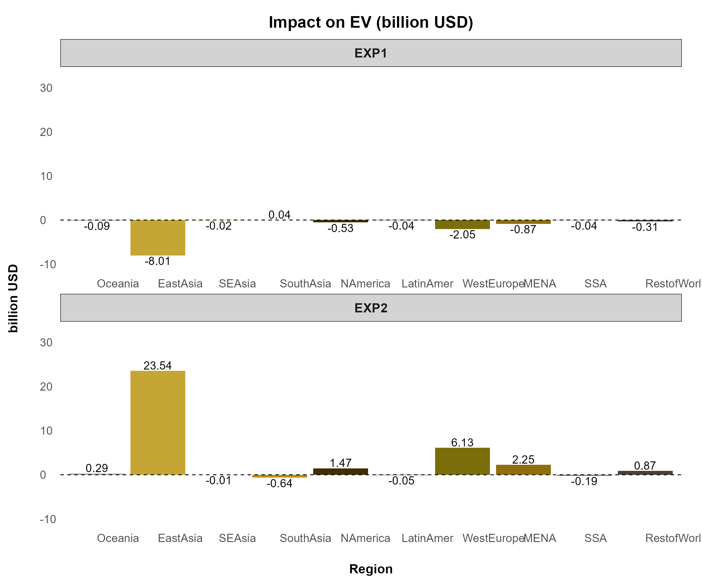
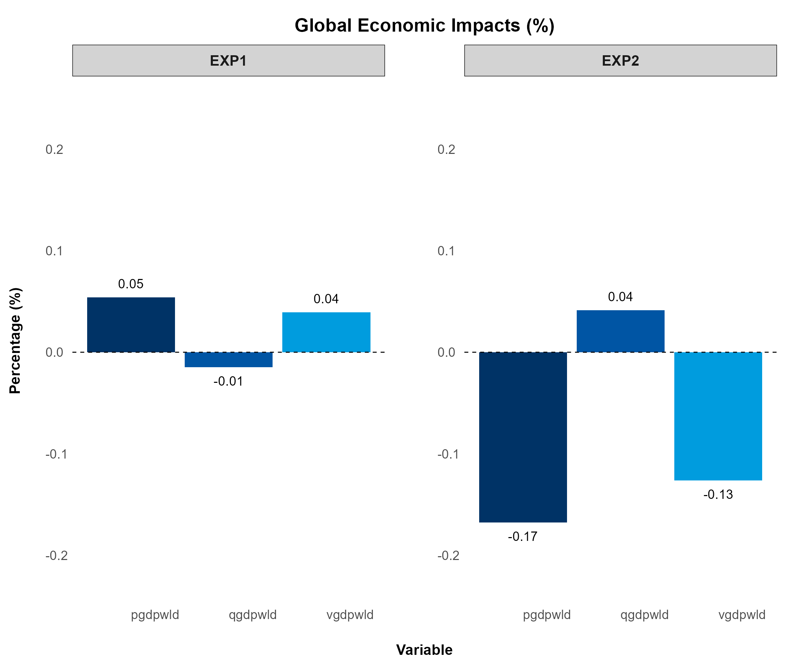
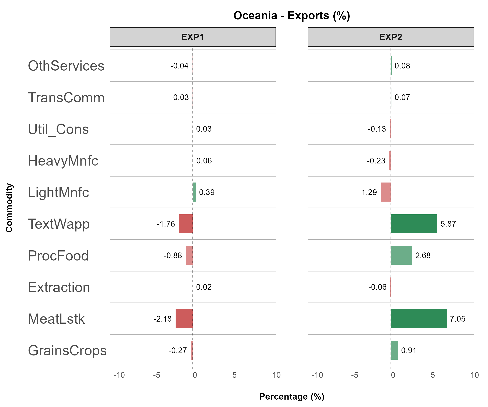
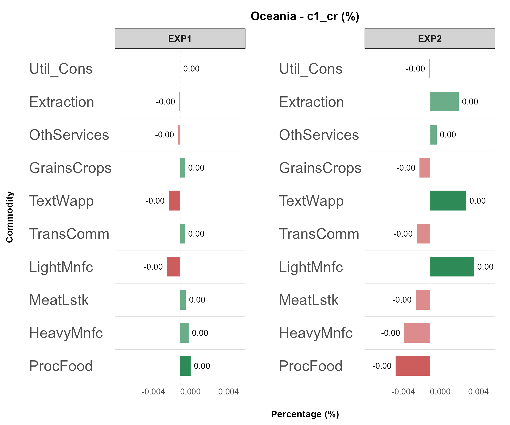
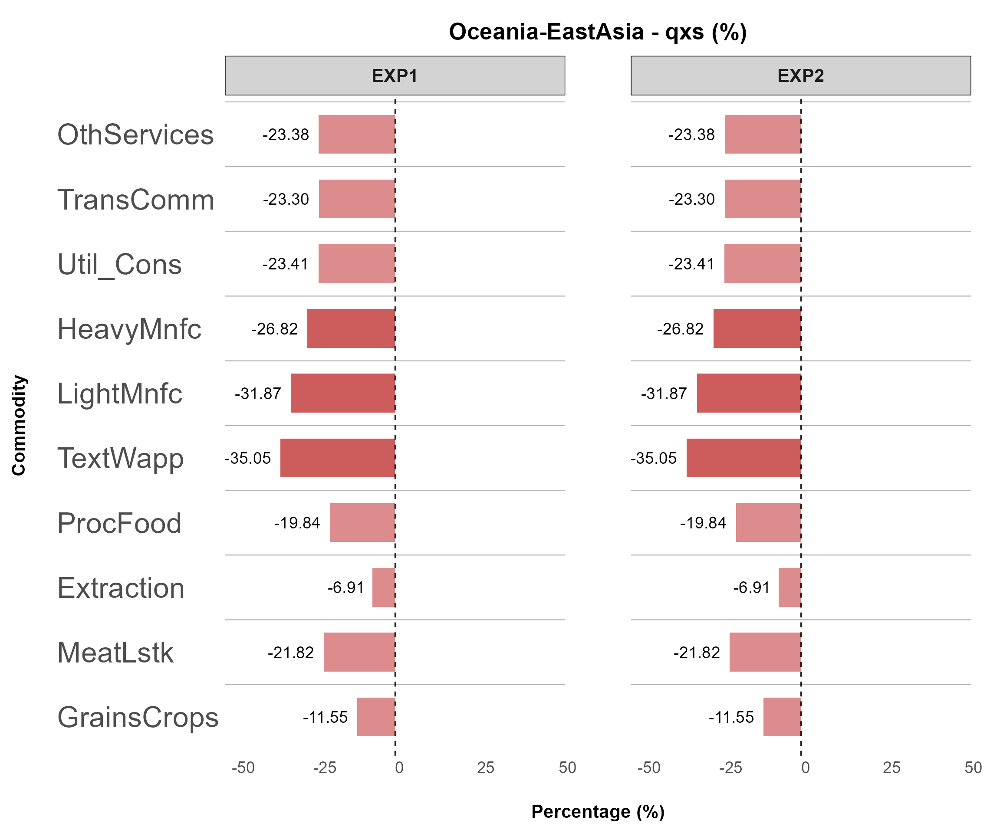
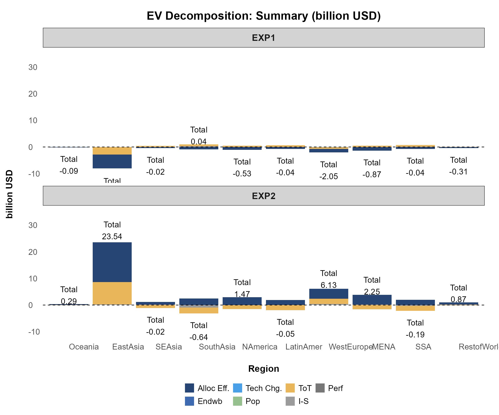
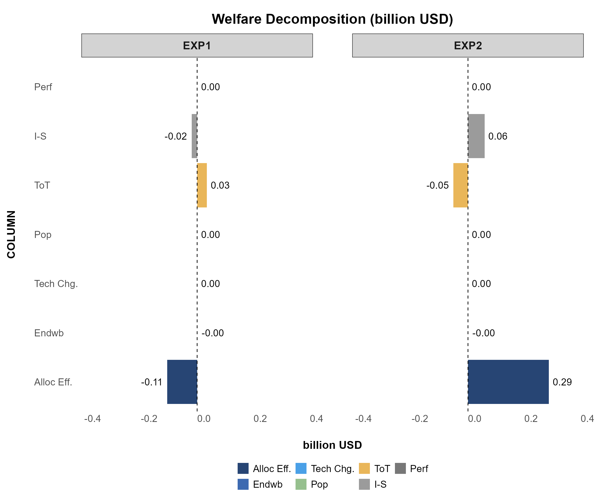
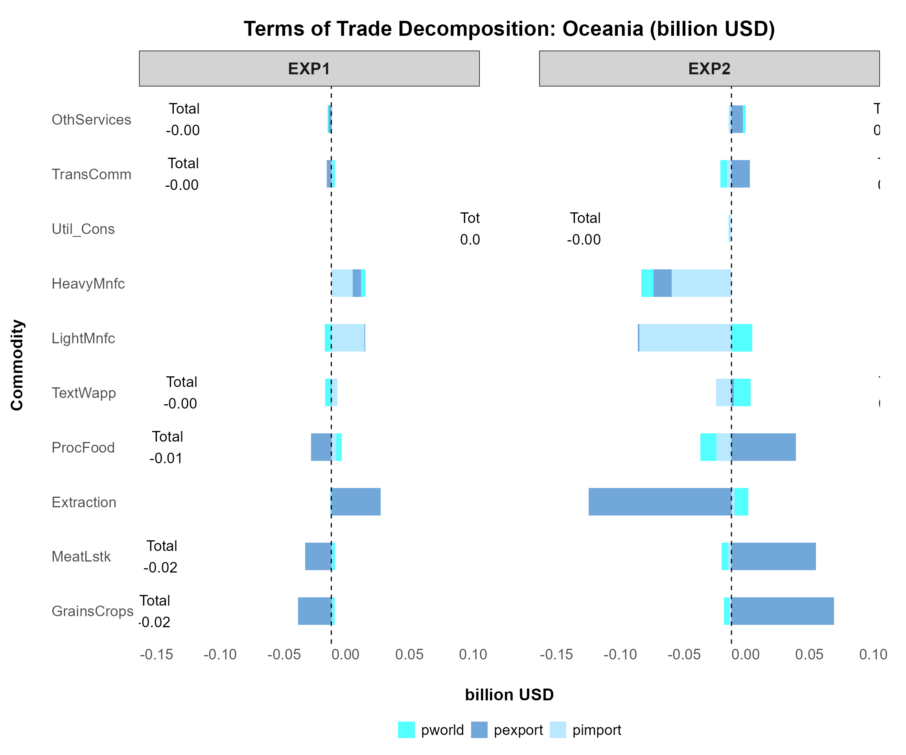
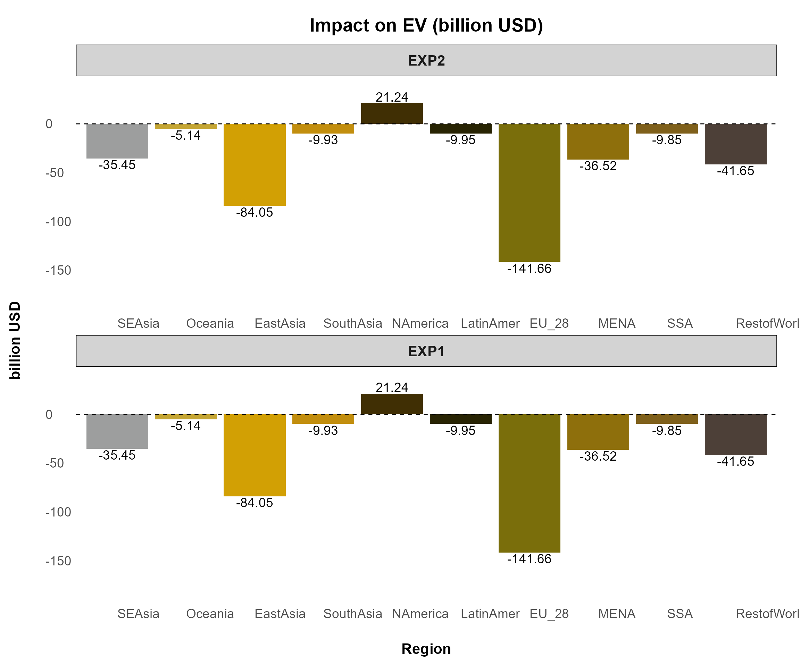

Plot: A Step-by-Step Guide
Pattawee Puangchit
2025-10-20
Source:vignettes/GTAPViz_Plot.Rmd
GTAPViz_Plot.RmdThis vignette illustrates how to set up plot configurations and
generate outputs.
For a complete list of available plot types with sample images, see the
plot
catalog.
Comparison Plot
This figure compares one or multiple variables across all experiments for selected observations from a chosen dimension (e.g., region, sector).
Key Features
Designed for comparing selected variables across experiments.
Displays all selected variables in one plot, making it ideal for a few observations; too many can make it dense and unclear.
Example 1
Plotting qgdp, ppriv, EV,
tot, and u generates six separate figures
using the following command:
reg_data = sl4.plot.data[["REG"]]
plotA <- comparison_plot(
# === Input Data ===
data = reg_data,
filter_var = NULL,
x_axis_from = "Region",
split_by = "Variable",
panel_var = "Experiment",
variable_col = "Variable",
unit_col = "Unit",
desc_col = "Description",
# === Plot Behavior ===
invert_axis = FALSE,
separate_figure = FALSE,
# === Variable Display ===
var_name_by_description = FALSE,
add_var_info = FALSE,
# === Export Settings ===
output_path = NULL,
export_picture = FALSE,
export_as_pdf = FALSE,
export_config = create_export_config(
width = 20,
height = 12
),
# === Styling ===
plot_style_config = create_plot_style(
color_tone = "purdue",
add_unit_to_title = TRUE,
title_format = create_title_format(
type = "prefix",
text = "Impact on"
),
panel_rows = 2
)
)
GTAP Macro Variable Plot
This figure displays aggregated values across all experiments, typically for global economic impacts. It is designed for GTAP Macro variables extracted from the “Macros” header.
Key Features
Compares macroeconomic indicators across experiments.
Works with aggregated data, making it ideal for global-scale analysis.
Primarily used for GTAP Macro variables but can be applied to other aggregated datasets.
To plot this figure—the only difference from previous figures is
changing split_by = FALSE—you can use the following
command:
macro.plot <- comparison_plot(
# === Input Data ===
data = macro.data[["macros"]],
filter_var = c("pgdpwld", "qgdpwld", "vgdpwld"),
x_axis_from = "Variable",
split_by = FALSE, # THIS IS THE MOST IMPORTANT PART FOR THIS PLOT
# === Export Settings ===
output_path = NULL,
export_picture = FALSE,
export_as_pdf = FALSE,
export_config = create_export_config(
width = 20,
height = 15
),
# === Styling ===
plot_style_config = create_plot_style(
color_tone = "gtap",
title_format = create_title_format(
type = "full",
text = "Global Economic Impacts"
)
)
)
(splt_by = FALSE, panel_rows and panel_cols = NULL i.e., default)
Detail Plot
This figure visualizes large-scale data, displaying all sectors (COMM, ACTS) or all regions (REG) within each experiment.
Key Features
Supports visualization across two selected dimensions.
Suitable for datasets too large for comparison_plot.
Automatically detects and aligns variables with different dimension names.
Filters data by selecting the most affected variables using top_impact.
Example 1
The following command plots all variables with sectors on the x-axis for each region:
sector_data <- sl4.plot.data[["COMM*REG"]]
plotB <- detail_plot(
# === Input Data ===
data = sector_data,
filter_var = list(Region = c("Oceania")),
x_axis_from = "Commodity",
split_by = "Region",
panel_var = "Experiment",
variable_col = "Variable",
unit_col = "Unit",
desc_col = "Description",
# === Plot Behavior ===
invert_axis = TRUE,
separate_figure = FALSE,
top_impact = NULL,
# === Variable Display ===
var_name_by_description = TRUE,
add_var_info = FALSE,
# === Export Settings ===
output_path = NULL,
export_picture = FALSE,
export_as_pdf = FALSE,
export_config = create_export_config(
width = 45,
height = 20
),
# === Styling ===
plot_style_config = create_plot_style(
positive_color = "#2E8B57",
negative_color = "#CD5C5C",
panel_rows = 1,
panel_cols = NULL,
show_axis_titles_on_all_facets = FALSE,
y_axis_text_size = 25,
bar_width = 0.6,
all_font_size = 1.1
)
)💡 Tip
You may notice the following adjustments:
positive_colorandnegative_color: Define colors for positive and negative values, automatically distinguishing impacts by shade.show_axis_titles_on_all_facets: Suppresses repeated labels across facets.y_axis_text_size: Increases y-axis label size to 25 from the default setting.bar_width: Decreases bar width for better visualization of large datasets.all_font_size: Increases all font sizes to 1.3 from the default setting.

(top_impact = NULL, invert_axis = TRUE, panel_rows = 1)
Example 2
Another powerful feature of detail_plot is the
top_impact argument,
which automatically filters and displays the most-affected values (both
gains and losses)
based on the x_axis_from grouping.

(top_impact = 10, invert_axis = TRUE)
Example 3
Another example involves plotting multi-dimensional data like
bilateral trade (qxs).
To do this, specify:
split_by = c("Source", "Destination")
This automatically generates separate plots for each unique pair,
e.g., "Oceania-SEAsia", "Oceania-EastAsia",
etc.
Each plot shows detailed impacts at the sector (COMM)
level for that country pair.
bilateral_data <- bilateral_data[["qxs"]]
plotB3 <- detail_plot(
# === Input Data ===
data = bilateral_data,
filter_var = list(Source = c("Oceania"),
Destination = c("SEAsia", "EastAsia")),
x_axis_from = "Commodity",
split_by = c("Source", "Destination"), # The most important part!
# === Plot Behavior ===
invert_axis = TRUE,
separate_figure = FALSE,
top_impact = NULL,
# === Variable Display ===
var_name_by_description = FALSE,
add_var_info = FALSE,
# === Export Settings ===
output_path = NULL,
export_picture = FALSE,
export_as_pdf = FALSE,
export_config = create_export_config(
width = 45,
height = 20
),
# === Styling ===
plot_style_config = create_plot_style(
positive_color = "#2E8B57",
negative_color = "#CD5C5C",
panel_rows = 1,
panel_cols = NULL,
show_axis_titles_on_all_facets = FALSE,
y_axis_text_size = 25,
bar_width = 0.6,
all_font_size = 1.1
)
)
(top_impact = 10, invert_axis = TRUE)
Stack Plot
This plot visualizes decomposition results, showing how different components contribute to a total value, making it particularly suitable for decomposition analysis.
Key Features
Displays the contribution of components to a total value.
Allows further decomposition by unstacking components instead of using a stacked bar.
Suitable for welfare decomposition, trade decomposition, and other GTAP structural breakdowns.
💡 Tip
# Rename Value if needed
wefare.decomp.rename <- data.frame(
ColumnName = "COLUMN",
OldName = c("alloc_A1", "ENDWB1", "tech_C1", "pop_D1", "pref_G1", "tot_E1", "IS_F1"),
NewName = c("Alloc Eff.", "Endwb", "Tech Chg.", "Pop", "Perf", "ToT", "I-S"),
stringsAsFactors = FALSE
)
har.plot.data <- rename_value(har.plot.data, mapping.file = wefare.decomp.rename)Example 1
You can use the following command to plot the decomposition figure:
plotC <- stack_plot(
# === Input Data ===
data = har.plot.data[["A"]],
filter_var = NULL,
x_axis_from = "Region",
stack_value_from = "COLUMN",
split_by = FALSE,
panel_var = "Experiment",
variable_col = "Variable",
unit_col = "Unit",
desc_col = "Description",
# === Plot Behavior ===
invert_axis = FALSE,
separate_figure = FALSE,
show_total = TRUE,
unstack_plot = FALSE,
top_impact = NULL,
# === Variable Display ===
var_name_by_description = TRUE,
add_var_info = FALSE,
# === Export Settings ===
output_path = NULL,
export_picture = FALSE,
export_as_pdf = FALSE,
export_config = create_export_config(
width = 28,
height = 15
),
# === Styling ===
plot_style_config = create_plot_style(
color_tone = "gtap",
panel_rows = 1,
panel_cols = NULL,
show_legend = TRUE,
show_axis_titles_on_all_facets = FALSE
)
)
(split_by = FALSE, show_total = TRUE, unstack_plot = FALSE)
Example 2
To further analyze the decomposition at the component level, set
unstack_plot = TRUE to display unstacked plots.

(split_by = FALSE, invert_axis = TRUE, unstack_plot = TRUE)
Example 3
Another practical example is plotting the decomposition of terms of trade (header E1), which is also a good example of multi-dimensional plotting. You may try the following command:
plotE <- stack_plot(
# === Input Data ===
data = har.plot.data[["E1"]],
filter_var = list(Region = c("Oceania", "SEAsia")),
x_axis_from = "Commodity",
stack_value_from = "PRICES",
split_by = "Region",
panel_var = "Experiment",
variable_col = "Variable",
unit_col = "Unit",
desc_col = "Description",
# === Plot Behavior ===
invert_axis = TRUE,
separate_figure = FALSE,
show_total = TRUE,
unstack_plot = FALSE,
top_impact = NULL,
# === Export Settings ===
output_path = NULL,
export_picture = FALSE,
export_as_pdf = FALSE,
export_config = create_export_config(
width = 50,
height = 30
),
# === Styling ===
plot_style_config = create_plot_style(
title_format = create_title_format(
type = "prefix",
text = "Terms of Trade Decomposition",
sep = ": "
),
color_tone = "winter",
panel_rows = 1,
show_axis_titles_on_all_facets = FALSE,
bar_width = 0.5,
show_legend = TRUE
)
)
(split_by = “Region”, plot_style_config -> adjustments)
Tip
Plot Configurations
- Run the following chunks to view all available configurations.
Rename the list outputs
my_export_configandmy_style_configto any names you prefer; you can create as many styles as needed.Enter the name of your custom style list into the plot function, while other settings in
(...)remain unchanged, as shown in the sample below:
Sorting Output
This function allows you to sort data before generating plots or
tables.
For example, you can display EXP2 before EXP1,
or SEAsia before Oceania.
It supports:
- Sorting by multiple columns simultaneously for precise output
control
- Applying consistent sorting across all data frames within a data list
See ?sort_plot_data for full details.
Key arguments:
colsspecifies the column(s) to sort based on a predefined order (e.g., insl4.plot.data,ExperimentandRegionwill follow the defined order).sort_by_value_desccontrols whether sorting is in descending order (TRUE/FALSE/NULL).
To apply sorting, use the following command:
# Using the function
sort_sl4_plot <- sort_plot_data(
sl4.plot.data,
sort_columns = list(
Experiment = c("EXP2", "EXP1"), # Column Name = Sorting Order
Region = c("SEAsia", "Oceania")
),
sort_by_value_desc = NULL
)
Renaming Values
To automatically modify values in any column before plotting—such as
renaming country names in the REG column (e.g., changing
"USA" to "United States" or "CHN"
to "China")—use the following command:
# Creating Mapping File
rename.region <- data.frame(
ColumnName = "REG",
OldName = c("USA", "CHN"),
NewName = c("United States", "China"),
stringsAsFactors = FALSE
)
sl4.plot.data_rename <- rename_value(sl4.plot.data, mapping.file = rename.region)
Another useful example is renaming the components of welfare
decomposition before plotting.
# Rename Value if needed
wefare.decomp.rename <- data.frame(
ColumnName = "COLUMN",
OldName = c("alloc_A1", "ENDWB1", "tech_C1", "pop_D1", "pref_G1", "tot_E1", "IS_F1"),
NewName = c("Alloc Eff.", "Endwb", "Tech Chg.", "Pop", "Perf", "ToT", "I-S"),
stringsAsFactors = FALSE
)
welfare_decomp <- rename_value(har.plot.data, mapping.file = wefare.decomp.rename)Sample Data
Sample data used in this vignette is obtained from the GTAPv7 model and utilizes data from the GTAP 11 database. For more details, refer to the GTAP Database Archive.